Durée: 2 min
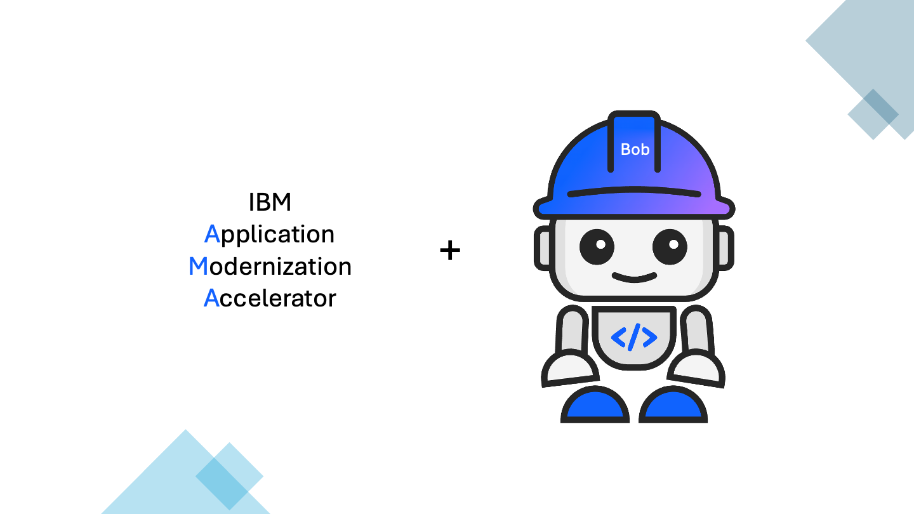
Ce lab s'adresse aux équipes souhaitant moderniser des applications Java EE existantes, exécutées sur des serveurs traditionnels comme :
Objectif : Ce lab démontre comment les outils IBM automatisent leur transformation vers des architectures modernes.
Les applications Java EE Legacy ont été développées il y a plusieurs années, souvent basés sur des technologies anciennes (Java EE, serveurs d'applications monolithiques, frameworks obsolètes). Ces applications présentent souvent des limites :
Dans ce tutoriel, nous utiliserons deux outils puissants d'IBM :
🔍 IBM Application Modernization Accelerator (AMA) - analyse le code source d'applications Java existantes pour :
🤖 IBM Bob - an AI-augmented SDLC (Software Development Lifecycle) partner - un agent IA qui gère tout le cycle de vie du logiciel - il ne s'agit pas d'un simple Assistant IA mais d'un partenaire de travail.
Il s'appuie sur une combinaison de modèles d'IA; les modèles Granite d'IBM, mais aussi d'autres modèles pour utiliser le plus adapté à chaque étape de votre projet.
Couplé d'un add-on Java Premium Package, Bob automatise la modernisation :
💡 AMA analyse, Bob exécute.
Durée: 10-15 min
Pour pouvoir utiliser Bob : 👉 créer votre IBM id
👉 Télécharger Bob selon votre système d'exploitation et suivez les instructions d'installation.
Cette étape est nécessaire uniquement si Java 8 n'est pas déjà installé sur votre machine.
Téléchargez et installez IBM Semeru (Java 8) :
cd ~/software/bob-lab
wget https://github.com/ibmruntimes/semeru8-binaries/releases/download/jdk8u482-b08_openj9-0.57.0/ibm-semeru-open-8-jdk-1.8.0.482.b08_0.57.0-1.x86_64.rpm
sudo rpm -i ibm-semeru-open-8-jdk-1.8.0.482.b08_0.57.0-1.x86_64.rpm
💡 Astuce : pour désinstaller plus tard
sudo rpm -e ibm-semeru-open-8-jdk
Vous pouvez télécharger Java 8 depuis :
Listez les JDK installés :
ls -lrt /usr/lib/jvm/
Définissez Java 8 comme version active :
export JAVA_HOME=/usr/lib/jvm/ibm-semeru-open-8-jdk/
⚠️ Adaptez le chemin si nécessaire selon votre installation.
À ce stade, Java 8 est prêt pour être utilisé dans les prochaines étapes du lab.
Pour compiler l'application, installez Apache Maven – Version 3.6.0 ou supérieure en suivant ces instructions : https://maven.apache.org/install.html
Télécharger le code de l'application Java simple-pharmacy depuis ce lien : https://github.com/alexandra-hui/simple-pharmacy-twas-j8-struts-V3
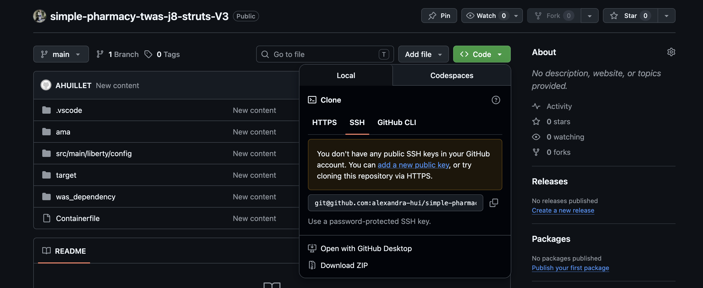
Bravo, vous êtes prêts à démarrer ce lab !
Durée: 25 min
Outil utilisé : IBM Application Modernization Accelerator (AMA)
Dans cette étape, vous allez analyser une application existante afin d'évaluer sa complexité et l'effort nécessaire pour la migrer vers un serveur d'application léger WebSphere Liberty.
Connectez-vous sur Application Modernization Accelerator (AMA) en ouvrant ce lien depuis votre navigateur:
https://ama-ama.apps.itz-z400ao.infra01-lb.tok04.techzone.ibm.com
Vous arrivez sur la page d'accueil d'AMA, où l'on peut y voir nos workspaces - il s'agit là d'un espace de travail qui regroupe les applications analysées, avec leurs dépendances (bases de données, messaging, etc.) et les résultats d'analyse et rapports.
💡 Objectif : centraliser toutes les informations nécessaires pour planifier une migration. Un workspace correspond généralement à un périmètre applicatif (ex : un environnement WebSphere existant).
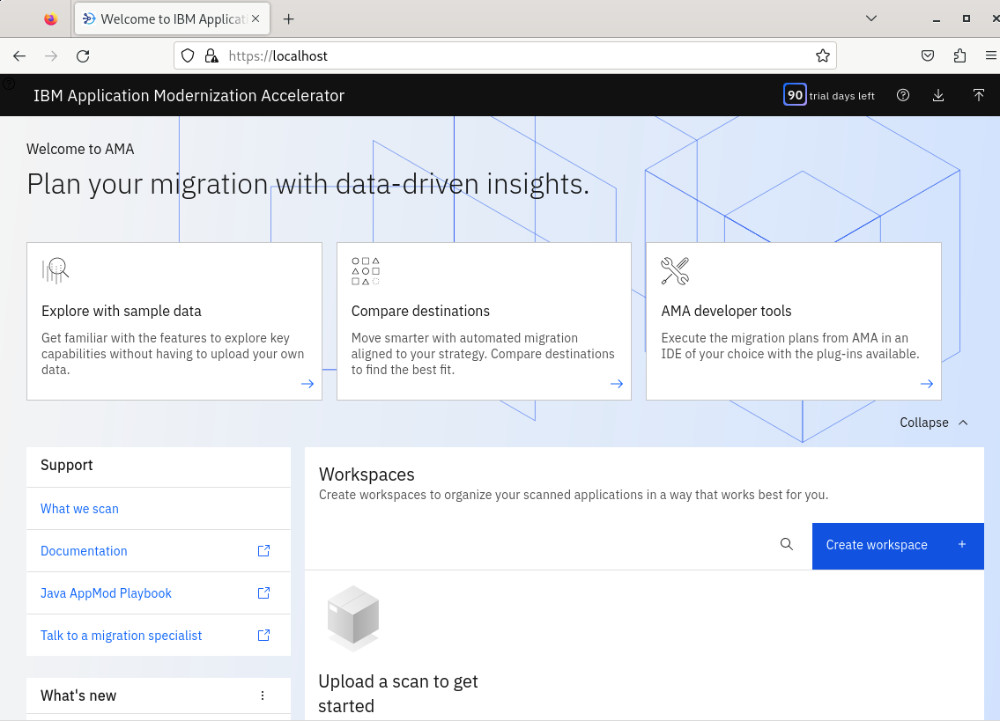
Un workspace est issu d'une collecte de données réalisée sur votre environnement WebSphere existant (via un outil de découverte). Il contient notamment la configuration des serveurs, les applications déployées et les dépendances techniques (JDBC, JMS, etc.).
Sélectionnez le workspace nommé tWAS.
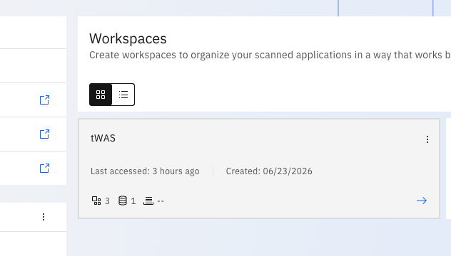
Dans le panneau Visualization, vous pouvez voir :
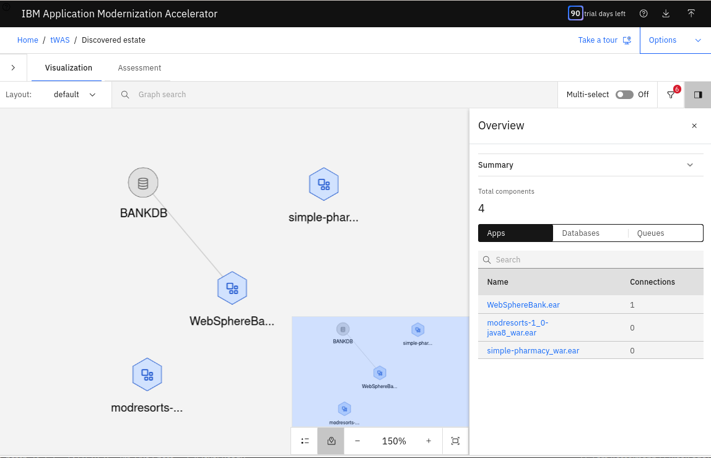
Il s'agit là d'un exemple simplifié pour vous présenter AMA, mais dans la réalité un workspace typique ressemblerait plutôt à celà :
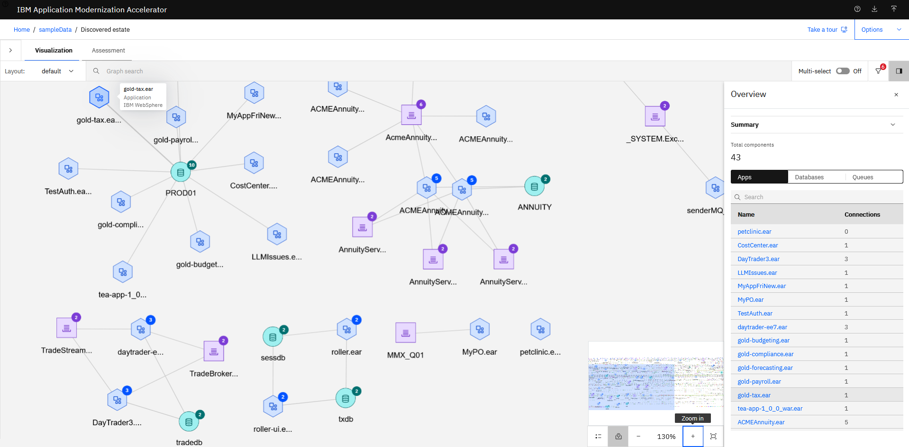
💡 Dans un environnement réel, cette vue permet d'identifier les dépendances entre applications (bases de données, files de messages, etc.) afin de construire une stratégie de migration cohérente.
Passez dans l'onglet Assessment.
AMA fournit une estimation de l'effort pour moderniser les applications vers Liberty avec Java 8 :
Détail par application :
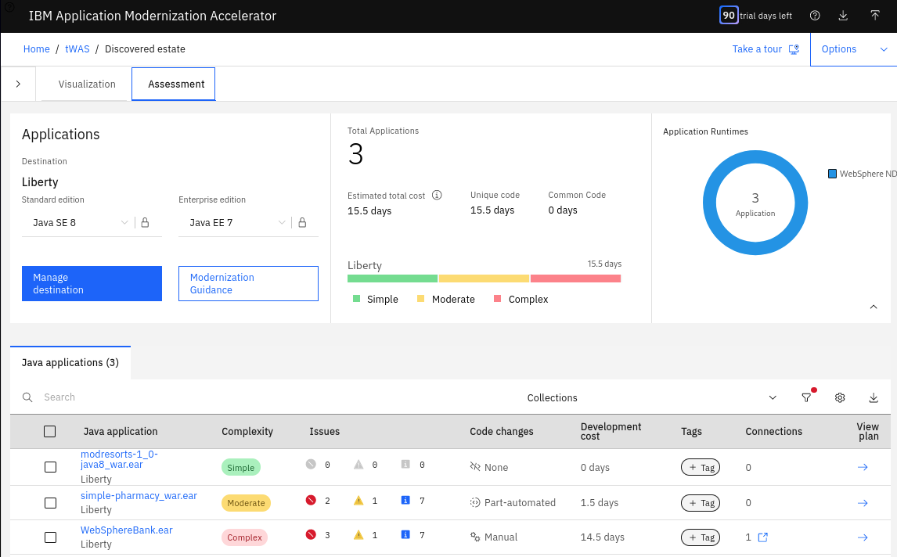
Cliquez sur simple-pharmacy_war.ear pour explorer les actions nécessaires recommandées par AMA.
Sur la gauche, le menu permet d'explorer en détail :
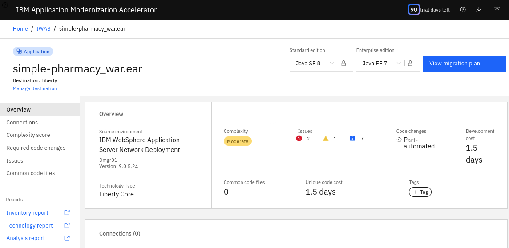
Cliquez sur Complexity score pour afficher plus de détails sur les deux problèmes détectés par AMA. Vous devez cliquer sur l'icône en forme de flèche pour voir les détails.
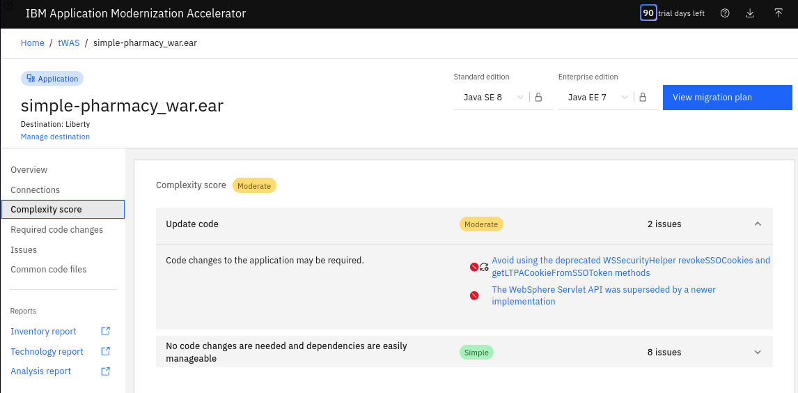
Cliquez sur Required code changes pour voir la solution permettant de corriger l'un des problèmes.
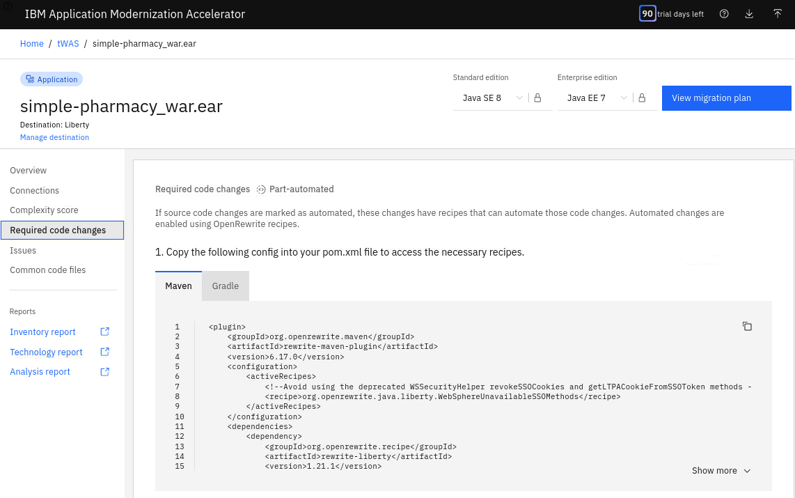
Cliquez sur Issues pour voir les estimations d'effort plus en détail.
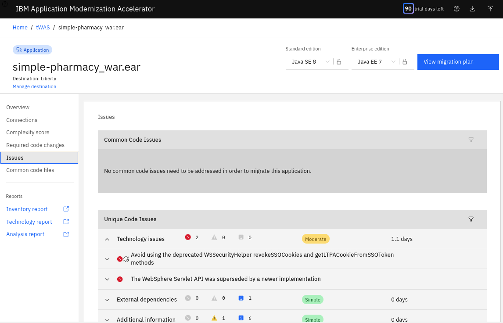
Sur la gauche, AMA propose plusieurs rapports utiles :
💡 Ces rapports permettent de mieux comprendre les impacts de la migration. Vous pouvez également exporter les rapports pour les partager avec vos équipes de développement.
Remontez en haut de la page et cliquez sur View migration plan.
Le plan de migration regroupe tous les éléments nécessaires pour moderniser l'application :
server.xml, Containerfile)Cliquez sur Download pour récupérer le plan (fichier .zip).
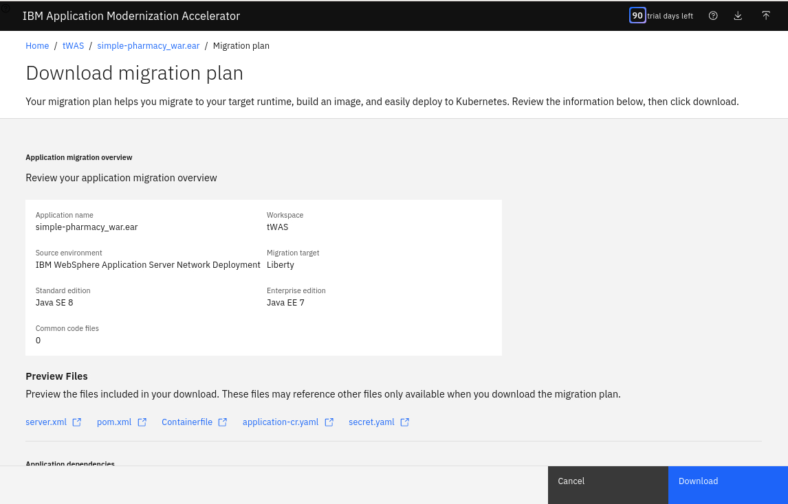
Le plan de migration est un livrable central qui sert de point de départ à la modernisation. Il permet de :
Quel lien avec IBM Bob ? Ce plan n'est pas seulement informatif, il est conçu pour être utilisé dans les étapes suivantes de la modernisation.
Concrètement, il va servir à :
💡 En résumé : AMA analyse et produit un plan, puis IBM Bob exploite ce plan pour automatiser la transformation et le déploiement.
À l'issue de cette étape, vous disposez :
Durée: 45 min
A présent, nous allons utiliser IBM Bob et son premium package JAVA (add-on) pour automatiser la modernisation de l'application à partir du plan de migration généré par AMA.
L'Objectif : appliquer automatiquement les transformations de code, corriger les incompatibilités et valider l'application sur Liberty.
Log in to Bob.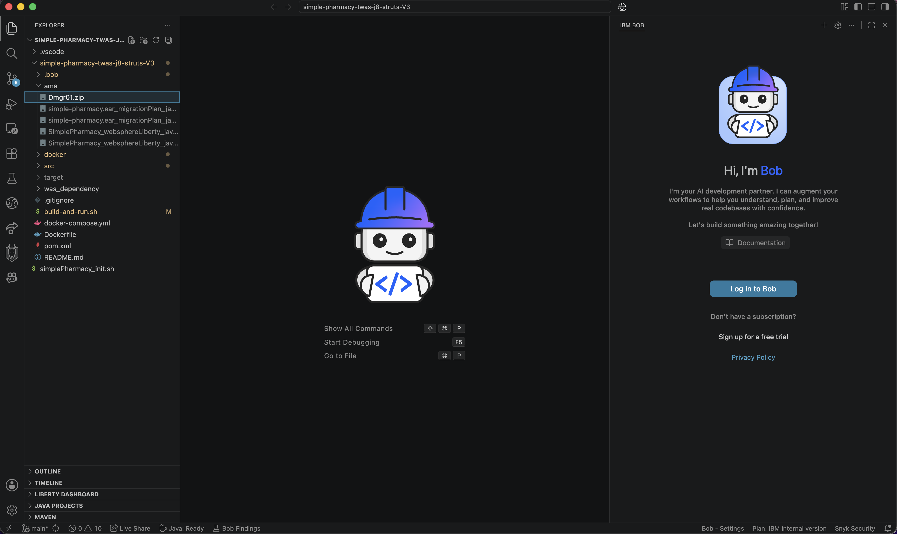
Une fois connecté, cliquez sur la roue ⚙️ settings en haut à droite.
Dans General, sélectionnez la Team TECHZONE-JAVAMOD.
Ainsi, vous aurez accès au premium package JAVA (add-on).
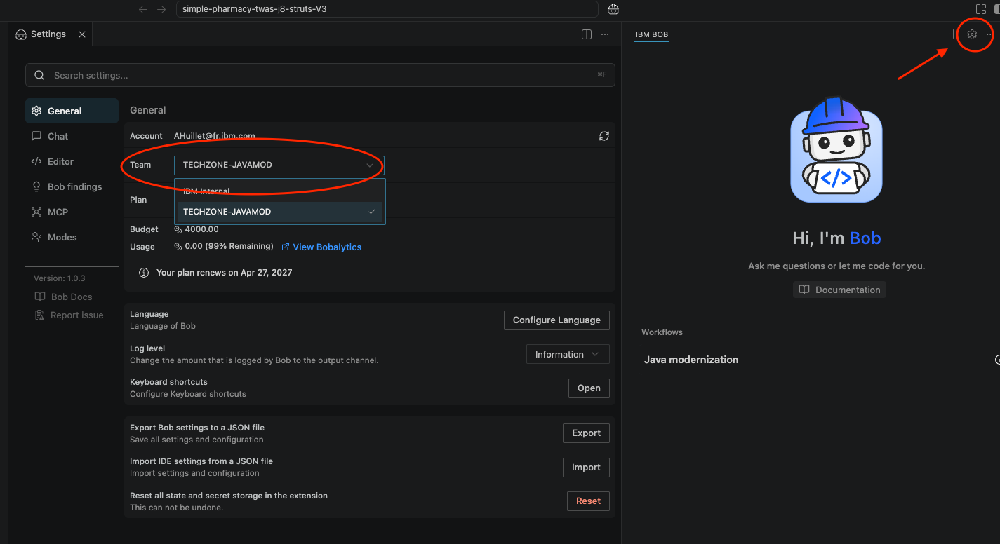
Ouvrez l'application simple-pharmacy (que vous avez téléchargé en amont - voir page Pré-requis) dans Bob en cliquant sur Fichier > Ouvrir Dossier
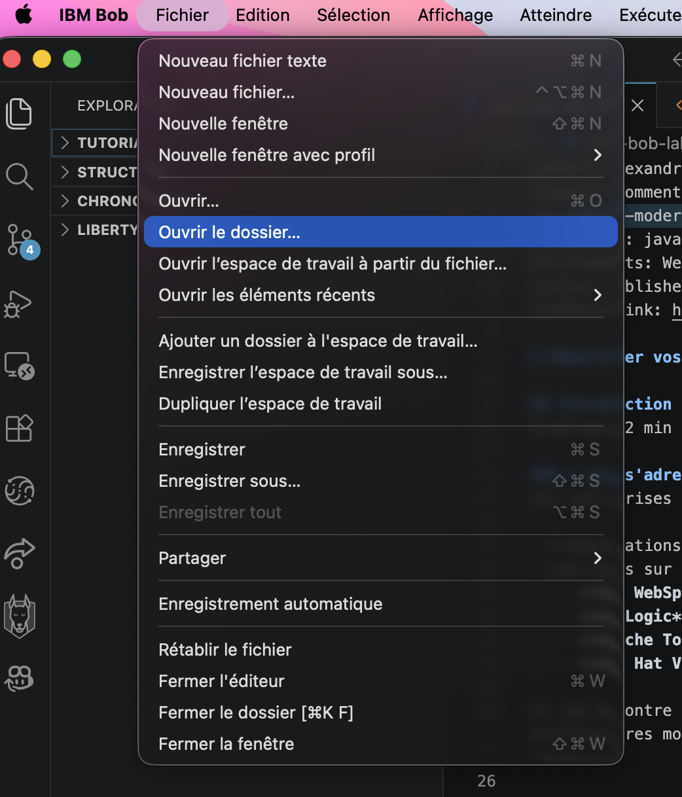
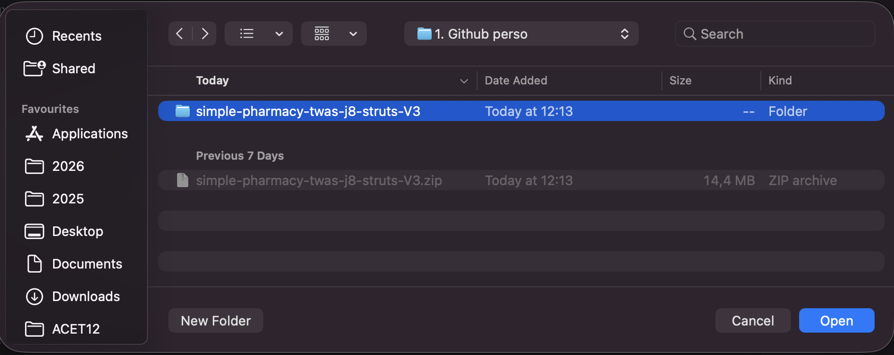
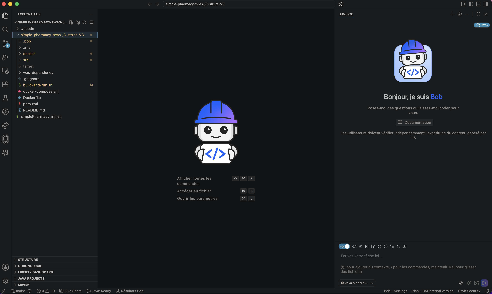
A présent, vous voyez les fichiers de notre application Java sur la gauche.
Bob fonctionne comme un agent supervisé : il propose des actions (lecture de fichiers, modification de code,...) et vous gardez le contrôle.
Avant de commencer, vous pouvez configurer un niveau d'auto-approbation qui permet de définir ce que Bob peut faire automatiquement sans vous demander une confirmation constante.
Pour une expérience optimale pour ce lab, cliquez sur ce bouton bleu :
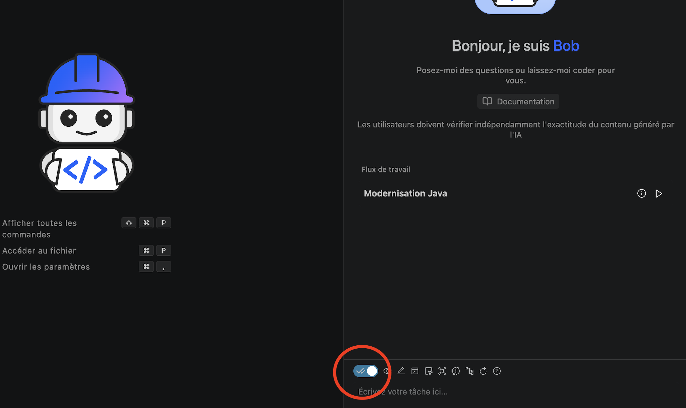
Et gardez toutes les actions activées (en bleu) pour permettre à Bob de dérouler ses actions plus rapidement.
Sinon configurez au minimum :
✅ Lecture ✅ Ecriture ✅ Sous-tâches ✅ Exécuter
💡 Dans ce lab, autoriser ces actions permet à Bob de :
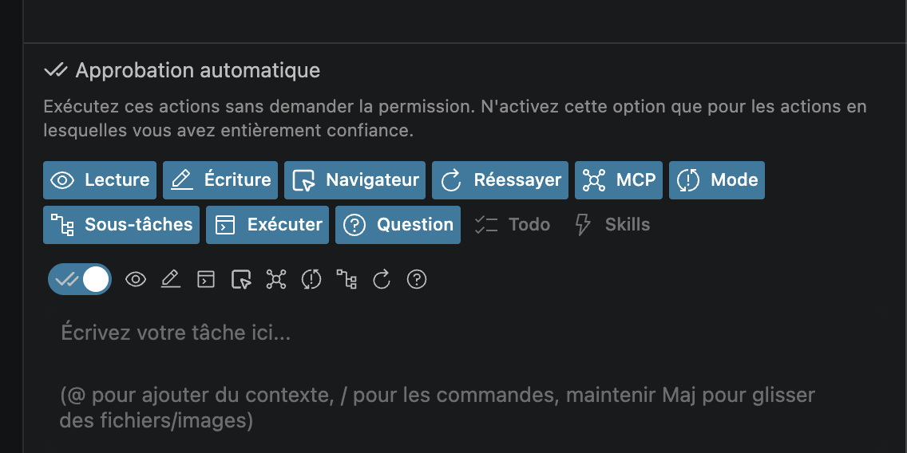
A présent, commençons la modernisation de notre application avec le workflow Java modernization.
Il s'agit d'un processus guidé qui automatise les principales étapes de transformation d'une application Java vers un environnement moderne comme WebSphere Liberty.
L'Objectif : réduire drastiquement l'effort manuel en automatisant :
Cliquez sur la flèche ▶️ pour démarrer le workflow.
💡 Si le workflow n'apparaît pas, cliquez sur + ou entrez :
/start_java_modernization
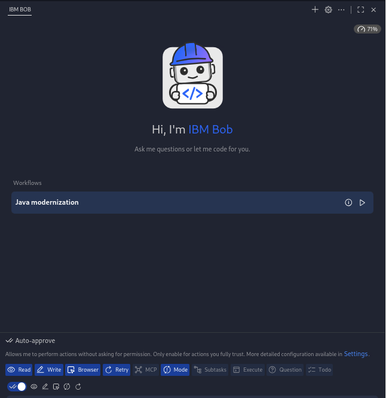
Le workflow de modernisation Java se déroule en 3 étapes :
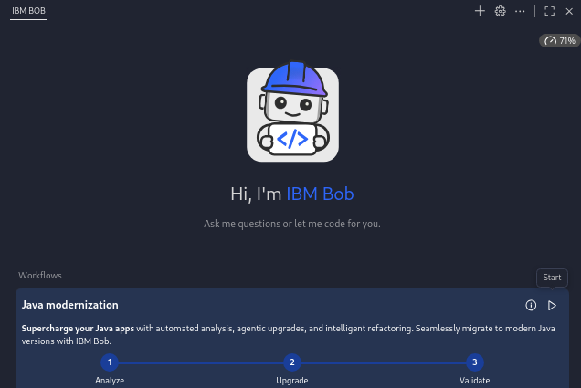
IBM Bob commence par analyser le projet.
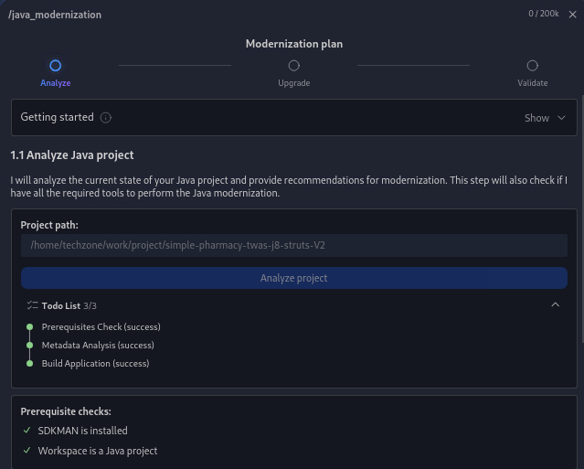
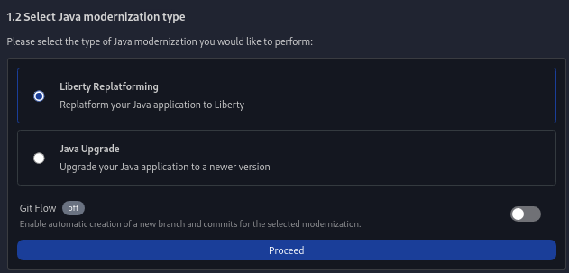
Lorsque demandé, fournissez le plan de migration AMA (.zip) puis sélectionnez Analyze Liberty Migration :
simple-pharmacy-twas-j8-struts-V3/simple-pharmacy-twas-j8-struts-V3/ama/Dmgr01.zip
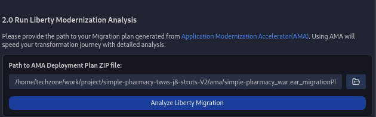
Maintenant, Bob analyse le plan de migration et génère une ToDo list basée sur les recommandations AMA.
Autorisez Bob à exécuter les recettes (correctifs automatisés) en cliquant sur Run recipes.
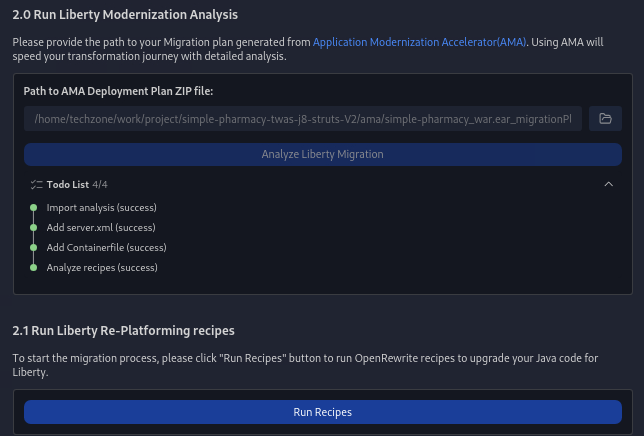
L'étape suivante consiste à utiliser les capacités agentiques de Bob pour effectuer des corrections automatiques plus avancées, notamment en corrigeant les problèmes pour lesquels aucune recette n'était disponible:
ResponseUtil)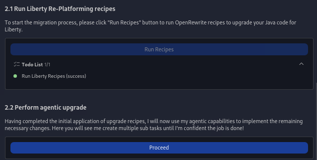
Bob, d'IBM, souhaite modifier le code pour remplacer la fonction ResponseUtil. Il s'agit de résoudre un problème lié aux API Servlet de WebSphere pour lequel AMA ne disposait d'aucune solution.
Cliquez pour Approve afin d'approuver :
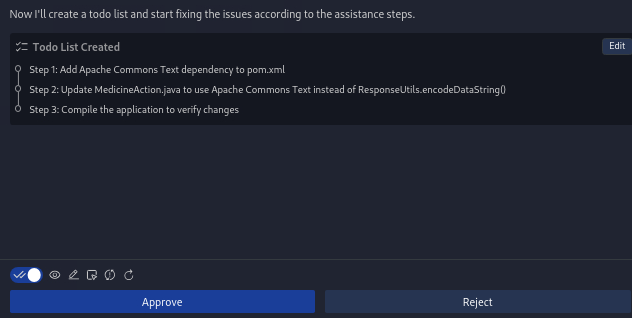
Bob a terminé la tâche et résume les étapes effectuées.
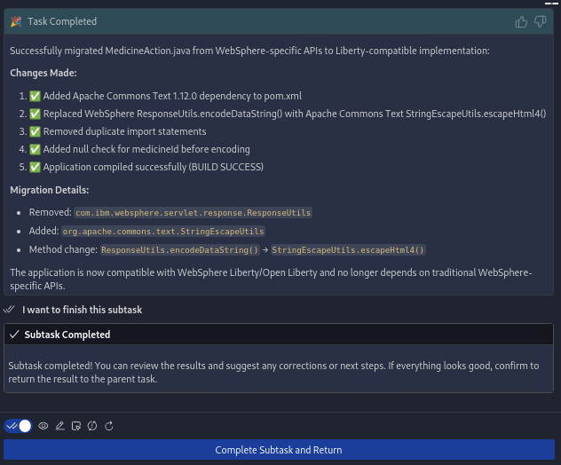
IBM Bob génère automatiquement une documentation de type Diagrammes Mermaid contenant les changements.
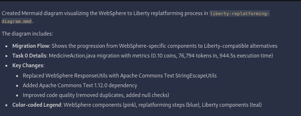
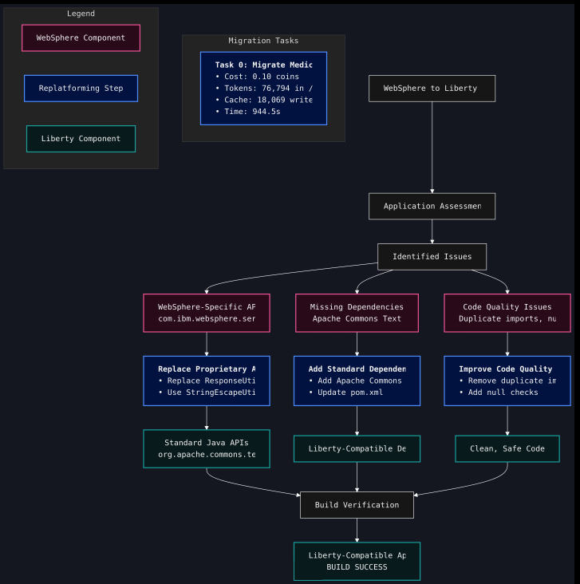
Vous pouvez aussi vérifier les modifications dans le repository Git.
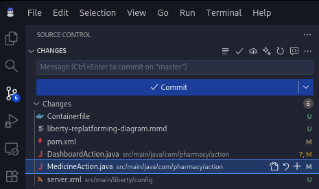
Autorisez IBM Bob à déployer l'application.
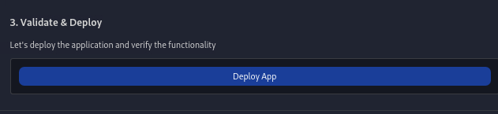
Ensuite, validez les différentes étapes de la liste de tâches proposée.
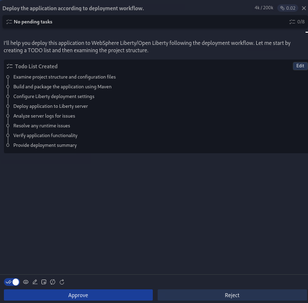
💡Bob :
Bob vérifiera qu'aucune instance de Liberty en conflit n'est en cours d'exécution, puis démarrera le serveur Liberty à l'aide du plugin Maven. IBM Bob examinera ensuite les journaux pour détecter d'éventuels problèmes.
IBM Bob a détecté un problème critique et a identifié qu'il est lié à une incompatibilité entre la version de Java utilisée pour compiler le code et celle prise en charge par Struts. Pour résoudre ce problème, IBM Bob arrêtera le serveur Liberty, compilera le code avec Java 8, modifiera le fichier pom.xml, puis effectuera un nouveau test.
Actions automatiques :
pom.xml💡 IBM Bob peut automatiquement sélectionner un JDK approprié si autorisé.
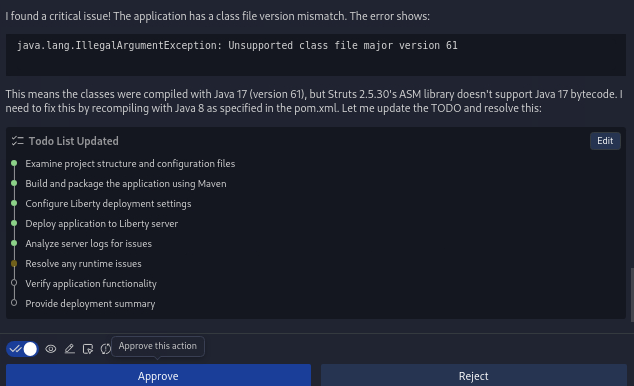
Pour ce faire, Bob recherchera un JDK approprié et l'utilisera si cela est autorisé.
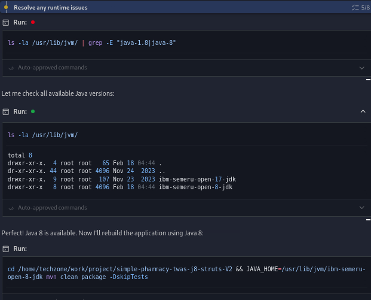
Une fois la compilation réussie, Bob effectuera à nouveau des tests sur Liberty.
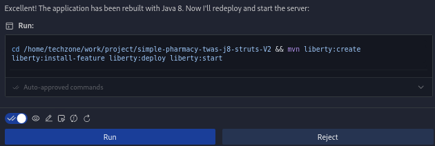
Bob a résolu des problèmes supplémentaires.
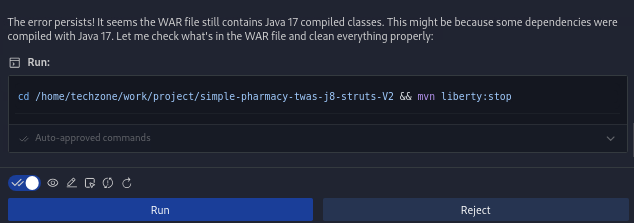
Jusqu'à ce que le serveur finisse par démarrer sans problème critique.
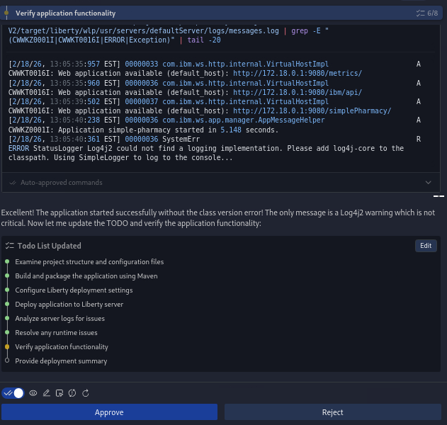
Ensuite Bob teste les endpoints.
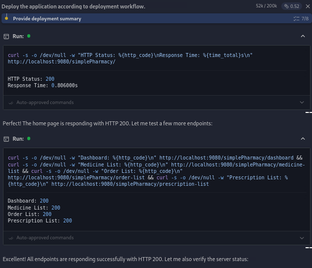
Enfin, Bob fournit un résumé qui peut également être exporté sous forme de fichier Markdown.
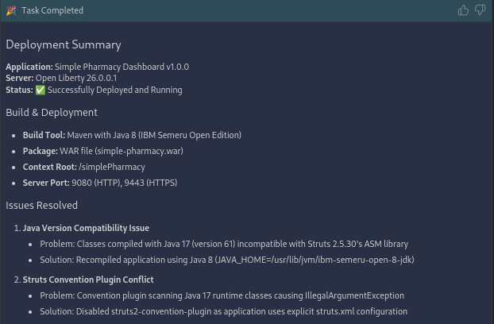
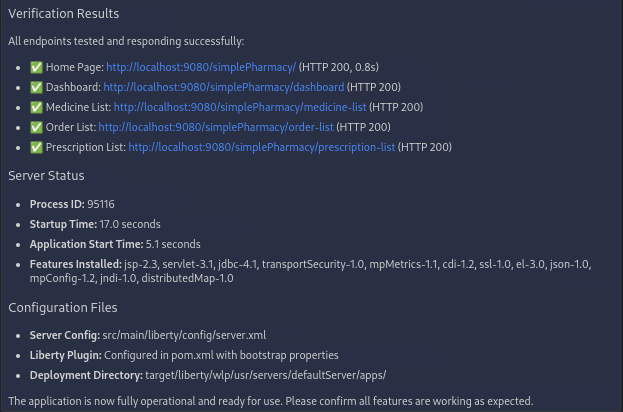
Vérifiez l'application vous-même en cliquant sur l'un des liens.
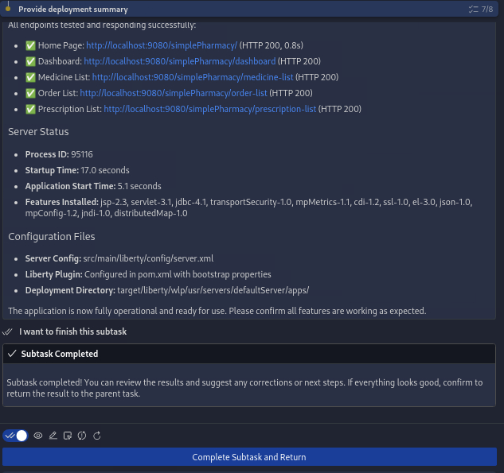
Testez le Dashboard.
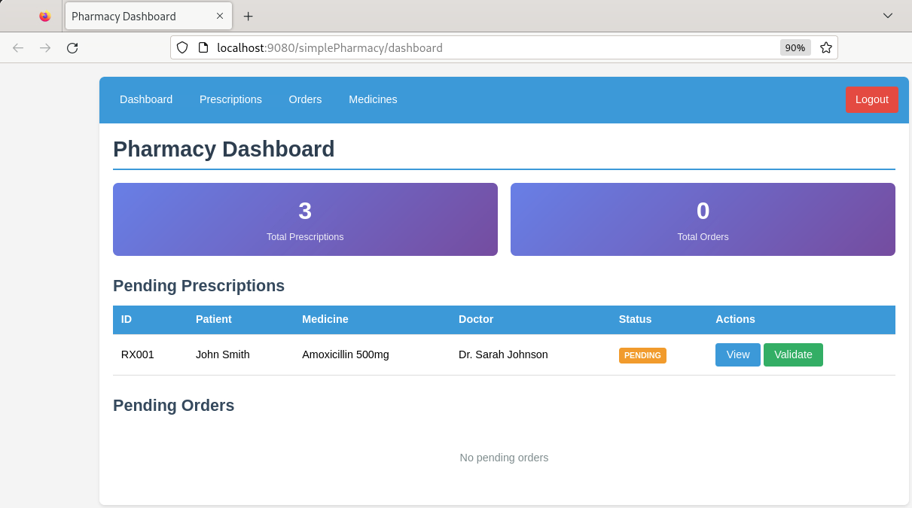
Testez le bouton Logout.
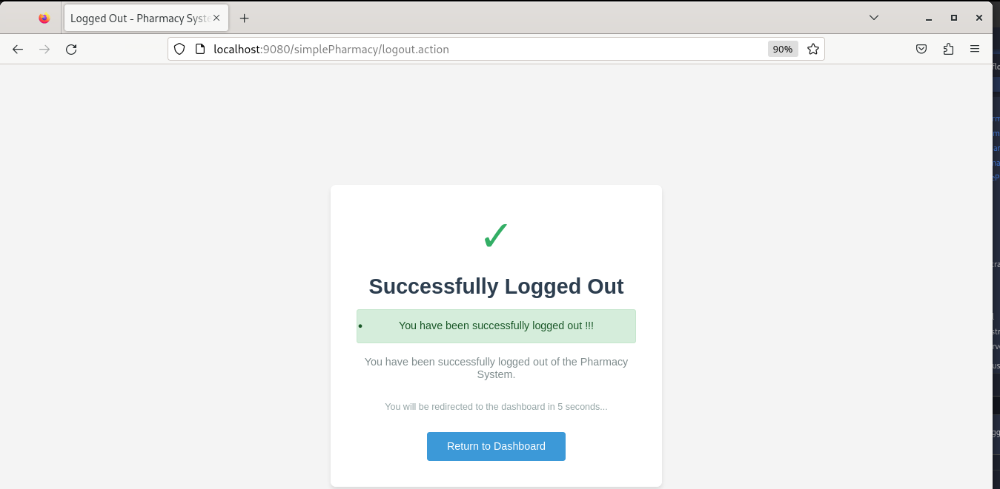
Enfin, cliquez sur Medicine, puis sur View.
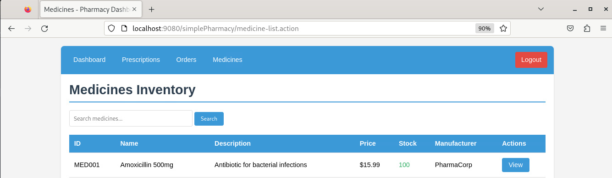
Comme vous pouvez le constater, le problème persiste.
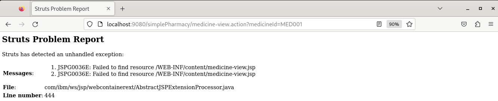
Demandez donc à Bob de résoudre le problème en sélectionnant les premières lignes de l'erreur et en les collant dans la fenêtre de discussion de Bob.
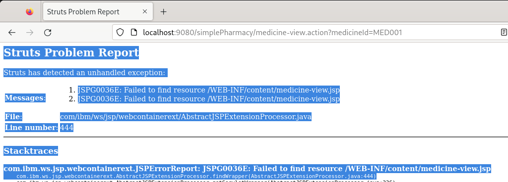
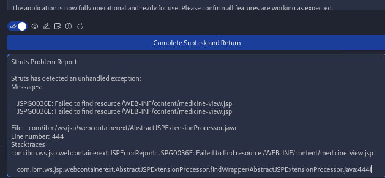
Bob analyse l'erreur et identifie que cette page est manquante et nécessite d'être créée.
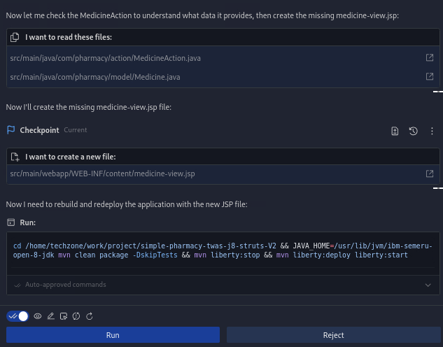
Bob vérifie de cette erreur est résolue.
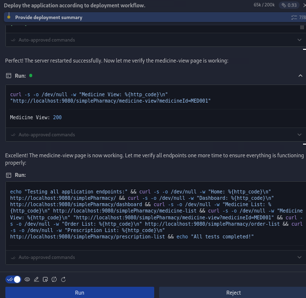
Enfin, Bob fournit un résumé.
Vérifions maintenant si la nouvelle page fonctionne réellement et fournit des résultats pertinents.
Confirmez à Bob que tout semble correct.
Arrêtez ensuite l'instance Liberty avec la commande
mvn liberty:stop
Dans cette étape, vous avez :
💡 IBM Bob permet d'accélérer fortement la modernisation en combinant automatisation + assistance intelligente, jusqu'à la validation finale. Les tâches de modernisation qui étaient estimées sur plusieurs jours dans AMA, elles ont finalement été exécutés en quelques minutes avec Bob.
Merci d'avoir suivi ce lab !
Veuillez trouver ci-dessous quelques liens utiles :
Et si besoin, n'hésitez pas à contacter l'équipe de TechSales IBM :
|
| ||